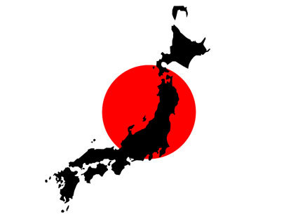

>

日本國，通稱日本，是位於東亞的島嶼國家，
由日本列島、琉球群島和伊豆－小笠原群島等6,852個島嶼組成，
面積約37.8萬平方公里。
日本是位於歐亞大陸以東，太平洋西部，
由3個弧狀群島（日本列島、琉球群島、伊豆-小笠原群島）組成。
其中北海道、九州、本州及四國四大島的面積就佔了國土面積的99.37%。
日本通常被歸劃於東亞或東北亞的範疇，
北與俄羅斯、西與北韓、南韓、中華人民共和國、西南與臺灣、南與菲律賓隔海相望。
日本由6,852個島嶼組成，面積約37.8萬平方公里。
國土面積75%屬山地丘陵地帶，因此森林覆蓋率高，但卻不適合農耕，耕無線積僅佔日本國土的11.1％。
也因此日本的人口多集中在沿海地區，日本的人口密度在世界排名第37位。
日本國土狹長，南北總長3,800公里，與澳洲、馬達加斯加、美國相近。

hspace="15">富士山是日本一座橫跨靜岡縣和山梨縣的活火山，
位於東京西南方約80公里處，主峰海拔3776公尺，2002年8月（平成14年），經日本國土地理院重新測量後，
為3775.63公尺，是日本國內的最高峰。
富士山頂於冬季積雪，直至次年6、7月才會融化，在管理上屬於本州地區的富士箱根伊豆國立公園範圍內。
富士山不但名列日本百名山，同時也是日本三名山之一，其名稱由來源自於竹取物語。
聞名全球的富士山是日本重要的象徵之一，被視為聖山，其在古代文獻中亦被稱為不二、不盡或是富慈，
也經常被稱作芙蓉峰或富岳。自古以來，這座山的名字就經常在日本的傳統詩歌「和歌」中出現。